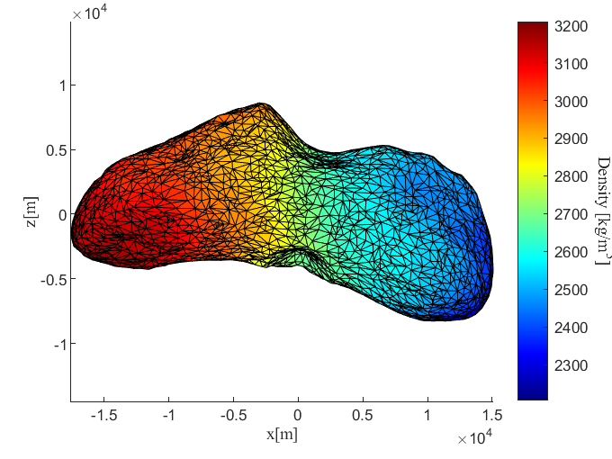
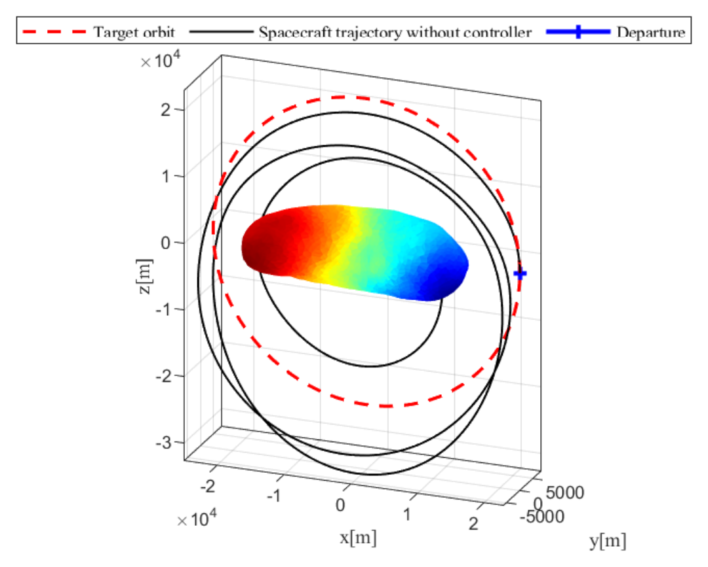
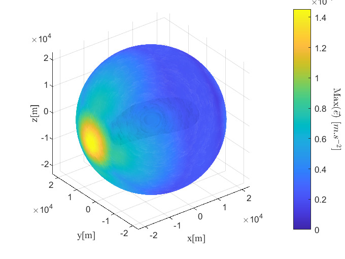
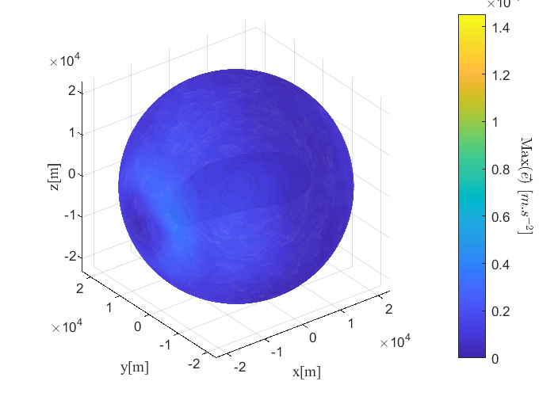
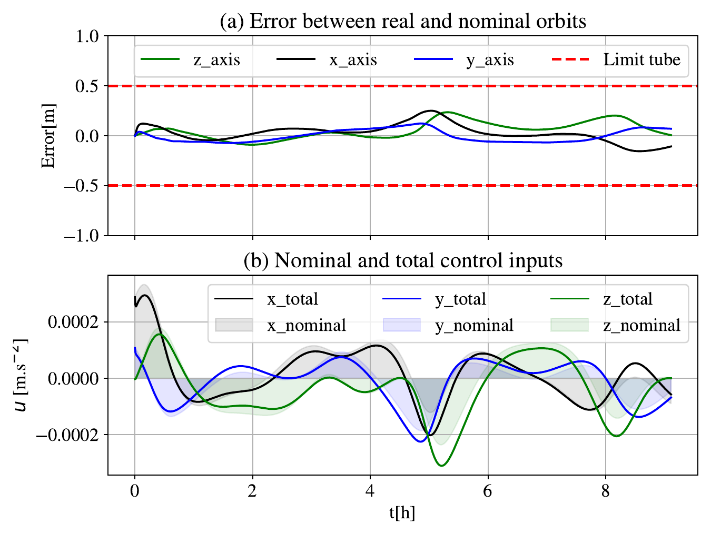
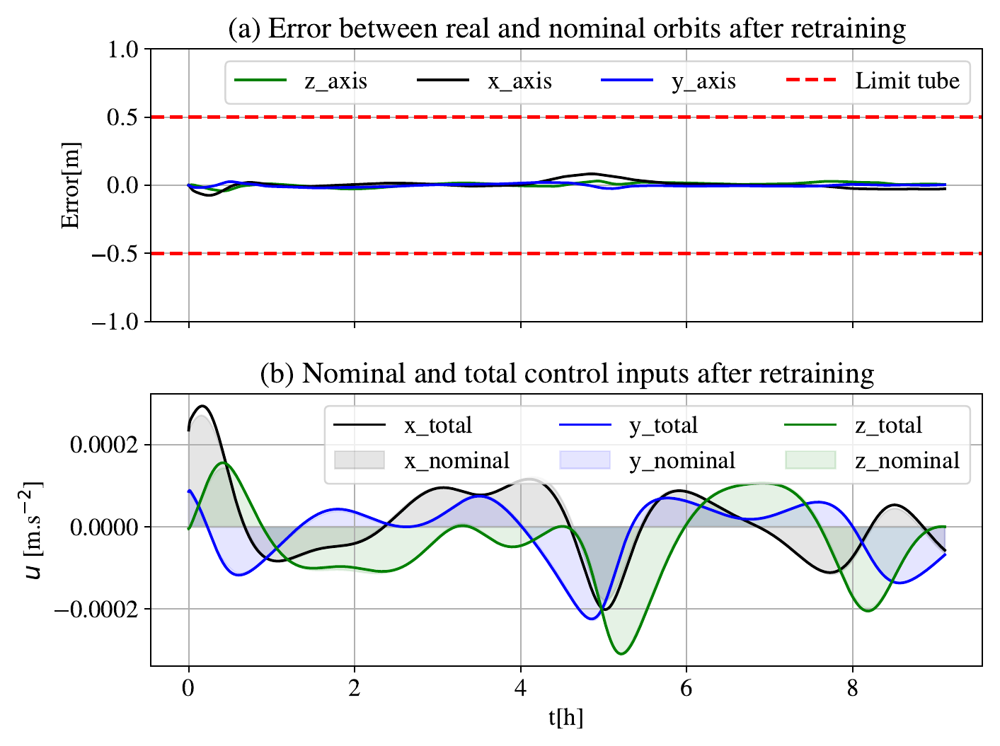

This thesis presents a Neural Tube Model Predictive Controller (MPC) for orbit control around asteroids. The complex and partially known gravity field of asteroids is modeled by a Physics-Informed Neural Network (PINN) trained on a high-resolution polyhedron model. This PINN gravity model, which offers improvements in computational efficiency over past analytic representations, is integrated as part of the dynamics within a nominal MPC pipeline. An online update of the PINN gravity model is investigated. A Tube MPC formulation with a Boundary Layer Sliding Mode Ancillary Controller is proposed to ensure robustness against unmodelled gravity and solar disturbances. The performances of the designed controller are illustrated in a realistic mission scenario on an unstable polar orbit around 433 Eros.


Polar orbits give global coverage of an asteroid, but around Eros those below about 35 km are unstable. The controller must hold a 23 km polar orbit with a small spacecraft modeled on Hayabusa 2 and electric thrusters, with an irregular, partially known gravity field and solar radiation pressure.
Over one orbital period (9.1 hours), the controller tracks the unstable orbit at 1 Hz: the real trajectory stays within a 0.5 m tube around the nominal one, for 4.41% more fuel than the nominal plan.
During a mission, the navigation filter can estimate the gravity acceleration along the trajectory. In the simulation, noisy estimates (up to 10% error) are collected every 10 minutes for 15 days on four stable polar orbits, from 35 to 50 km, and the network is retrained on them in 14 seconds before moving to the 23 km orbit. The maximum error of the gravity model on the target orbit drops by 76.4%.



